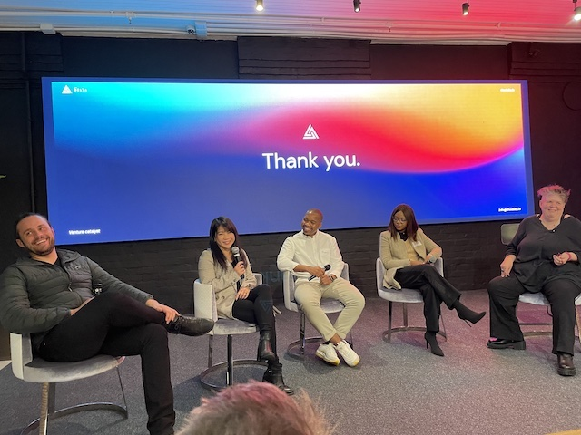
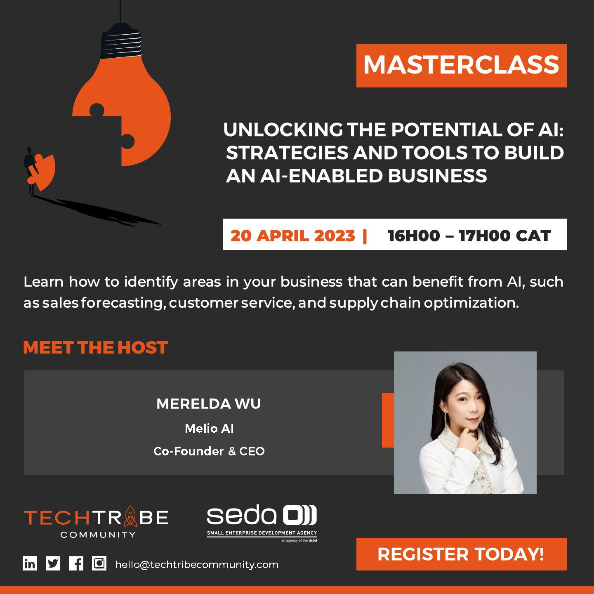
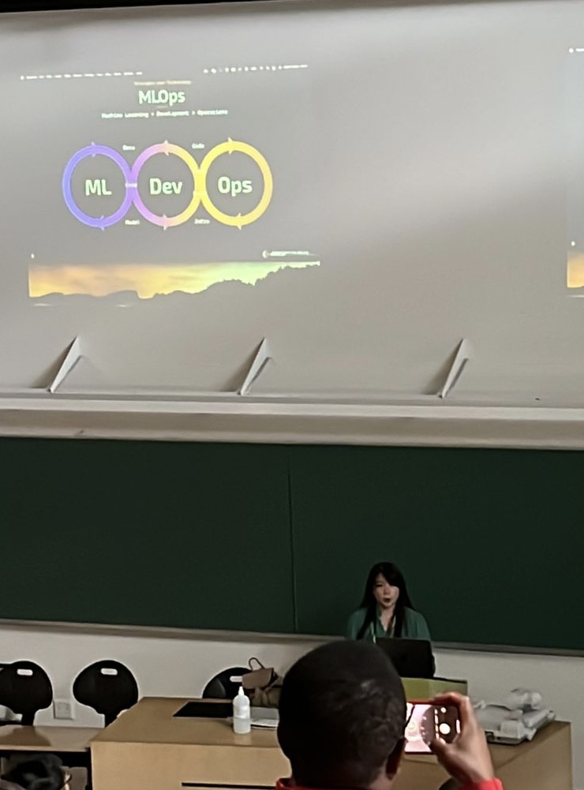
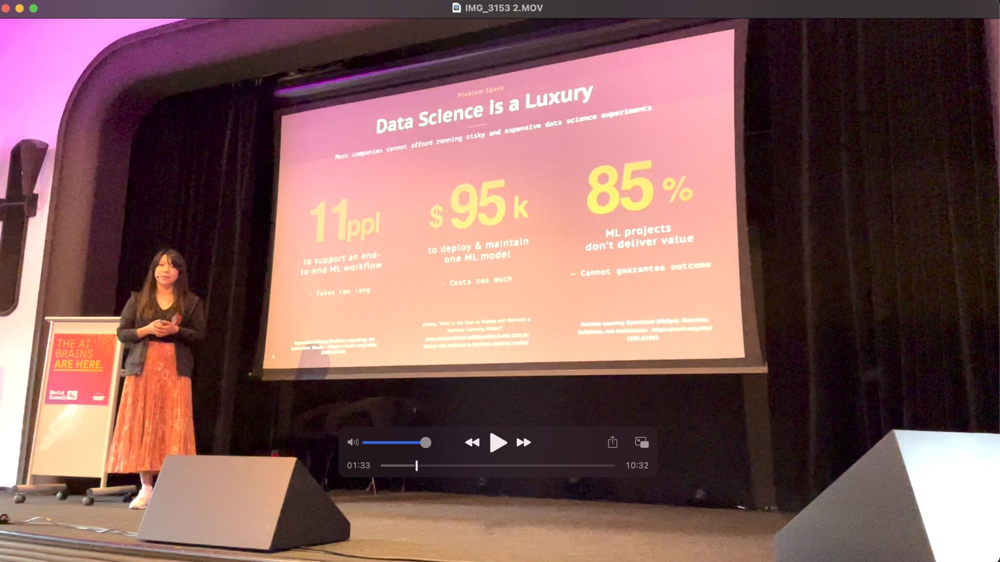
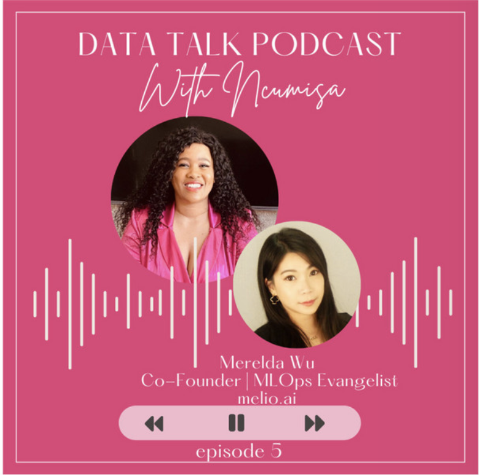
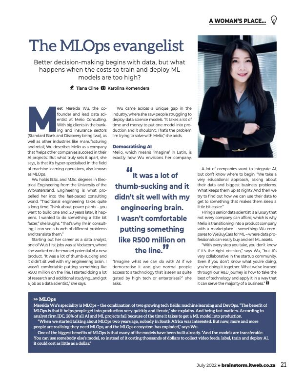
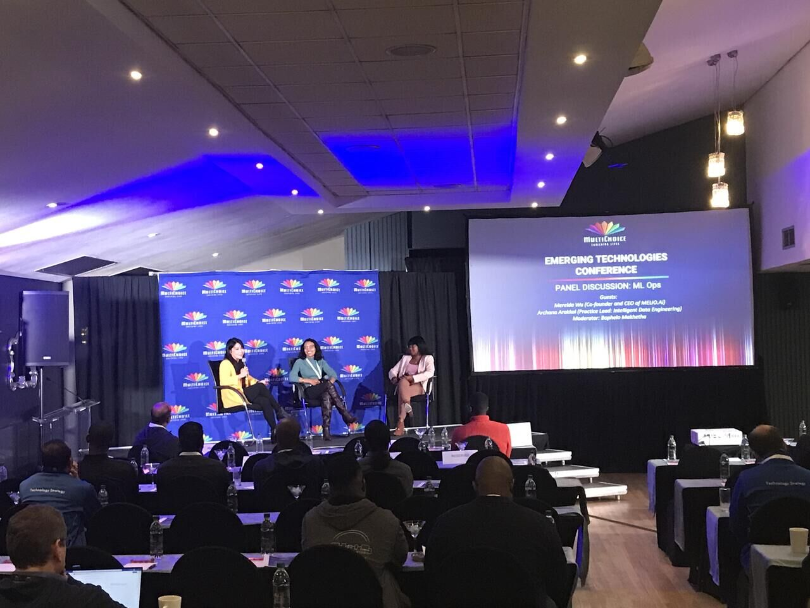

Talks
As a Recovering Data Scientist & MLOps Evangelist, I love sharing my passion with audiences who are interested in the world of Data/ML/AI. Here are the topics I’m interested at speaking about:
- Technical talks that cover MLOps, DataOps, and the art of building data-intensive software applications.
- Business talks on Data & (Gen) AI Strategy, data-driven decisions and how to drive ROI for data projects
- Case studies on our experience in architecting, building, deploying and operationalising Data, ML and AI projects.
Here are some of the talks I did for meet-ups, conferences, panel discussions, fireside chats, masterclass, interviews for podcasts and magazines.
🌟 [Keynote] Delta Connect
…. 📅 2023/07/06
I was invited by The Delta to present as a keynote speaker as well as a panelist for the AI Day: Embracing AI: Reshaping the Landscape of Venture Building.
👉 Expand here for the slides
👉 Expand here for photos
🌟 [Masterclass] Tech Tribe
…. 📅 2023/04/20
I was invited to present an one-hour masterclass for the TechTribe audience.
Title: Unlocking the potential of AI: Strategies and Tools to Build an AI enabled Business
Description:
In this masterclass, we’ll explore practical strategies and tools that you can use to build an AI-enabled business, even if you have no prior experience in AI. We’ll be sharing some real-life case studies from other companies to make it more practical!
Agenda include:
🔍 Identify opportunities to use AI in your business 🛟 A framework on building a practical AI strategy for your company (that doesn’t cost a leg!) 📏 Measure the impact of your AI initiatives 🌟 Avoid common pitfalls and build with best practices in mind.
👉 Expand here for the slides
🌟 [Conference] Deep Learning Indaba X
…. 📅 2022/12/13
I was invited as an MLOps specialist to the Deep Learning Indaba X conference to present a practical talk on MLOps.
Talk Title: From Google Collab to deployed endpoints following MLOps principles
Agenda include:
- Challenges of Deploying ML today
- How to do MLOps:
- Principles over Technology
- Convention over Configuration
- What’s a reasonable MLOps Stack
- Demo on Google Collab to Deployed Endpoint
👉 Expand here for the slides
🌟 [Conference] World Summit AI
…. 📅 2022/10/13
World Summit AI is a leading annual global conference hosted in Amsterdam. I presented a talk exploring the challenges and solutions to deploying machine learning models.
🌟 [Podcast] Data Talk Podcast with Ncumisa
…. 📅 2022/10/07
Podcast Title: Finding the right data science role for you and making meaningful impact
Podcast description:
In this episode, we chat to Merelda Wu. Merelda is the co-founder of Melio.ai and an MLOps Evangelist.
Having worked on a wide variety of data science projects before embarking on an entrepreneurship journey, Merelda has brought to this episode invaluable knowledge on how to carve your own path as a data scientist and aim to do work that will leave you fulfilled.
She touches on:
🌟 The different skills and competencies that can make one multi-skilled data scientist
🌟 The difference between ML Engineer, Data Engineer and Data Scientist and where they connect and overlap
🌟 The journey to building a successful AI company during a pandemic in a volatile economy and to stay focused on your cause
🌟 [Panel] SA Innovation Summit
…. 📅 2022/09/28
I was invited to be on a fireside chat on the role of AI in metaverse.
🌟 [Interview] Business Day TV
…. 📅 2022/07/28
This is an interview of me as a technologist working in AI. I spoke about the “curiosity” value is something we hold dearly at Melio AI. In our recent All-Hands, we commended our engineers on having the guts and tenacity to keep pushing boundaries. It’s not okay to keep promoting what you did 5 years ago in the tech world. You will have to become a life-long learner and keep innovating on how to make existing processes better. To that extent - we carved out a 20% time at Melio dedicated to learning and growing our people.
🌟 [Magazine] Brainstorm
…. 📅 2022/07/28
This is an opinion / interview piece for the Brainstorm Magazine on MLOps.
🌟 [Panel] Multichoice - Emerging Technology Conference
…. 📅 2022/07/21
Multichoice is a Africa’s leading entertainment company. I was invited as a machine learning expert to talk about the two things that I’m the most passionate about: MLOps & StartUp 🌟
Here are some of the topics we talked about for the startup panel: ⏩ Access to funding in SA, JHB vs. CT as a startup hub, how to attract and retain talent, typical (or atypical) day running a startup.
Here are some of the topics we talked about for the MLOps panel: ⏩ What really is MLOps, common pitfalls, how to convince businesses to adopt it, how to balance explainability & testing vs. delivering concrete value, and where do we even start?
🌟 [Podcast] Talk Data to Me
…. 📅 2022/06/27
We discussed my experiences seeing many data science and machine learning projects fail. It’s never business or technology, but a misalignment of the two. Another view I shared was using MLOps technology does not automatically make you immune to MLOps problems (may even open more?!).
We end the discussions with 3 tips on how to deploy more models into production while making sure that they are ultimately used by businesses & are generating value.
As a cloud-native advocate, I raised a final point about the use of Kubernetes in machine learning systems. My view is that it’s illogical not to consider k8s if your organisation plans on investing in machine learning. WDYT?
🌟 [Meet-Up] Cloud Native Computing Johannesburg
…. 📅 2021/04/14
Talk Topic: How to think Cloud-Native for your next Data project
I hosted a panel discussion on how to think Cloud-Native for your next Data project.
Talk intro:
Cloud-native computing has fundamentally transformed how software is built and delivered over the past couple of years. In recognising the benefits, many organisations are also looking to leverage cloud-native technologies to accelerate their data-centric applications.
We invited cloud-native specialist Harry Lee and data specialist Archana Arakkal to chat about how the two ecosystems are growing to serve the community. And how you, as a practitioner, can start thinking cloud-native to improve your efficiency!
🌟 [Magazine] Brainstorm
…. 📅 2020/10/07
Article Name: Building an AI Ecosystem
I was interviewed as an AI expert to give an opinion on Africa’s ambition to create our own AI forum. It was an honour to be featured in the front page as a spokesperson amongst other leading academic and industry professionals, such as Professor Tshilidzi Marwala (University of Johannesburg) and Mark Walker (Market analyst and VP, IDC Sub-Saharan Africa).
Here are a couple of excerpts:
-
“In order to have a standing in the world’s stage, you have to bring something forward, and to be able to do that, really starts with education. If the general public has a good sense of what AI is, the conversation can move a lot further than just, ‘AI is taking my job’.”
-
Wu believes the opportunity within AI is clear for Africa, but adds that successful application and the ability to leverage the technology will require collaboration and a stringent process in the formulation of policy.
-
She emphasises the need for close collaboration and private sector contribution, and says this sector is already focusing on addressing various AI biases and ensuring transparency in models being produced.
-
“Africa is unique in the way that obviously historically we’ve been more of a laggard, in terms of technology adoption, but it also presents an opportunity because we don’t have a lot of legacy and can very quickly adopt newer technologies without having to switch off current assets, because we don’t really have current assets. We also see a lot of African countries leapfrogging significantly, like Ghana, Kenya and Nigeria, they’re almost beating South Africa to the punch.”
🌟 [Conference] AI Expo
…. 📅 2020/09/04
Talk Title: Bridging the Last-Mile Deployment Problem with MLOps

I was given the opportunity to share my experience on MLOps at the biggest AI Expo in Africa.
Here’s the intro of the talk:
With AI, most companies choose to start with building small scale PoCs or POVs. Unfortunately, with this approach, many struggled to move from experimentation to scale. This is especially true for enterprise AI teams, where data science, data engineering, cloud, infrastructure, and business functions are all struggling in deep, parallel trenches. Companies who enjoy the greatest ROI starts with building their pathway to scale. If you don’t develop with deployment in mind, you will be stuck in islands of experiments.
I will begin this talk with the common reasons for the non-deployment of machine learning models. This is followed by an introduction to MLOps, and how organisations can benefit from building with the end in mind. Finally, I will discuss the practical steps that teams can follow to lay the foundations for smooth deployment.
🌟 [Conference] Girl Code
…. 📅 2020/08/12
I was invited to speak about my experience as a Women in Tech and Women Tech Founder at the GirlCode’s women month event.

🌟 [Meet-Up] Cloud Native Computing Johannesburg
…. 📅 2019/10/30
Talk Topic: Build with the end in mind: infrastructure-backed data science with Kubeflow
I gave a talk on Kubeflow at the joint event between Google Cloud User Group & Cloud Native Computing Johannesburg Group.
Talk intro:
As data scientists, we usually prototype use cases and try to find the one that can generate business value with the data on hand. We jump straight to work and at the end of the PoC accidentally wow-ed the stakeholders so much that they want the solution in production tomorrow. We scramble around our Jupyter notebooks and scripts to put together a pipeline that we think is reliable, the infrastructure guy then turns around and says “I can’t use any of this”.
At Melio, we develop with deployment in mind with Kubeflow. From the beginning, infrastructure sits with data science to gather the requirements for production. We set up the Kubeflow pipeline to allow our experiments to run exactly as how it will be run in production. From the data scientist’s perspective, it’s the same as writing notebooks; from the infrastructure, it’s the same as setting up Kubernetes.
In this talk, we will be presenting our data science workflow with Kubeflow both from the operation’s and data scientist’s standpoints. We will also demonstrate how we have incorporated Kubeflow into our profile image analyser pipeline.
🌟 [Meet-Up] R-Ladies - Johannesburg
…. 📅 2019/06/25
Talk Topic: How to talk to business as a data scientist
Talk intro:
Data science projects can go wrong in a million ways. To get it done well, you need to manage the expectations from day 0. How do you do this?
This talk by Merelda Wu distills the art form of “talking to business” to a list of non-scientific formulas that can be applied in your everyday life. If any of the following resonates with you, join us:
- The magic wand problem? Data doesn’t just give you “actionable insight”, you need to ask the right question.
- Misaligned expectations? The classic case of what you say you want, is not what you really, really want.
- The scope creep problem? Sure, of course I can re-write everything and give it to you five minutes ago.
- The big data problem? No darling, you don’t have big data if it fits in Excel.
- The confidence challenge? No, there’s no such thing as 100% accurate, also we use this thing called the F1 score.
- The cloud challenge? Yes cloud would be great, but your data’s gotta be there first though.
This talk shares some common problems faced in most data science projects. Some heart-aching stories will be shared, as well as some great tools and tips that will help you speak to your business logically, with tons of visual aid and zero mathematical equations.